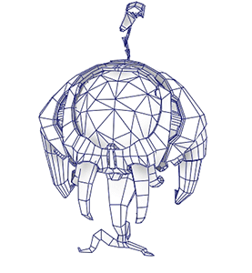
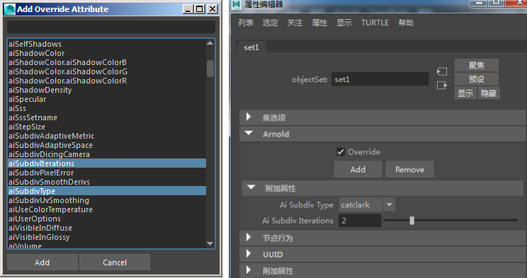
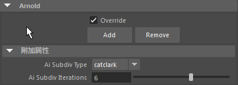
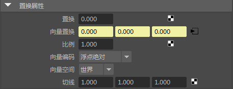
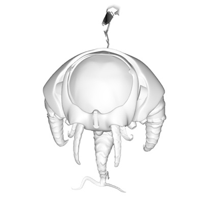
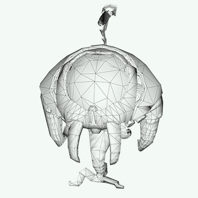
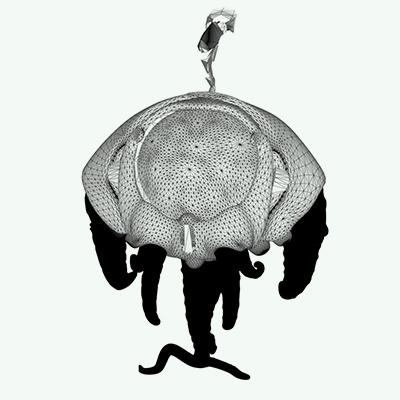

置换：Killamari
在本教程中，我们将介绍如何在 Killamari 角色的腿部和触角上使用向量置换。还将介绍覆盖集如何添加细分来创建平滑的网格。
要下载对应的 Maya 场景文件，请单击此处。
本教程涵盖以下主题：
细分
- 首先在 Maya 中打开 Killamari 模型。您会发现它是一个低多边形模型。我们可以通过使用 Arnold 的细分设置增加 subdivision_iterations 次数来添加几何体细节。在向腿部模型和触角模型添加置换时，我们还需要向其添加细分。

覆盖集
我们可以向 Maya 集添加任何更改并覆盖该集，而不必更改每个模型的 subdivision_iterations 次数。
- 选择身体（而非触角）几何体，并为其创建 Maya 集。
- 选择该集，然后转到“Arnold”选项卡。单击“添加”(Add)打开“添加覆盖属性”(Add Override Attribute)窗口。
- 我们要为模型创建平滑曲面，因此添加“Ai 细分类型”(Ai Subdiv Type)并将其更改为 catclark。
- 我们还要添加一些细分迭代以使模型变得平滑。向该集添加“Ai 细分迭代”(Ai Subdiv Iterations)，并将其增加到 2。

为身体集指定细分覆盖
请记住，每次细分迭代都会使多边形的数量翻四倍。如果为对象设置了 2 个级别的细分迭代，并在 Arnold 中设置了 4 次附加迭代，则总共有 6 次细分迭代，因此有 426936 * 4^6 = 426936 * 4096 = 17 亿个多边形。
增加 Arnold 的细分迭代次数并使用 Maya 的平滑网格预览功能（可以按键盘上的 3 进行访问）时，应格外小心。Arnold 还会在最终图像中渲染此平滑状态的预览。这可能会导致细分网格中的多边形数量远远超过所需的数量，从而延长导出/渲染时间。
向量置换
我们可以使用 vector_displacement 贴图向腿部模型和触角模型添加更多细节。
- 通过向腿部和触角几何体添加另一个覆盖集来重复上述步骤。但是，这次我们将“Ai 细分迭代”(Ai Subdiv Iterations)的次数增加到 6。我们需要通过这些额外的细分从置换贴图获得精细细节级别。

腿部和触角几何体的覆盖集
- 为 Killamari 指定一个 standard_surface 着色器，并将其重命名为 Killamari_body。
- 为该着色器选择着色引擎， 并将置换着色器连接到[*向量 置换(Vector Displacement)](topicid=arnold_for_maya_displacement_am_Vector_Displacement_html)*属性。
- 选择置换着色器，并将 killamari_merged_appendages_vdm 向量置换贴图连接到向量置换。
- 将 vector_space 更改为“世界”(World)。这是应用向量的坐标空间。

置换纹理连接到身体着色器的着色组
- 渲染场景。向量置换效果应如下图所示。
|  | ||
| 有置换 | 无置换 |
工具 着色器可用于在渲染置换贴图时诊断问题。该着色器具有多边形线模式，可用于测试渲染置换和细分。腿部和触角显示为黑色，因为它们的 subdivision_iterations 次数较高（6 次），而身体其余部位的细分迭代次数仅为 2。
如果需要在场景中禁用置换渲染，还可以使用功能覆盖（在进行场景诊断时很有用）。
|  |  |
工具 着色器。Shade_mode 设置为“ndoteye”， 而禁用细分（_“功能覆盖”(Feature Override)_）。
就是这样。祝贺您已完成了本教程。现在我们要去探索新的渲染世界！